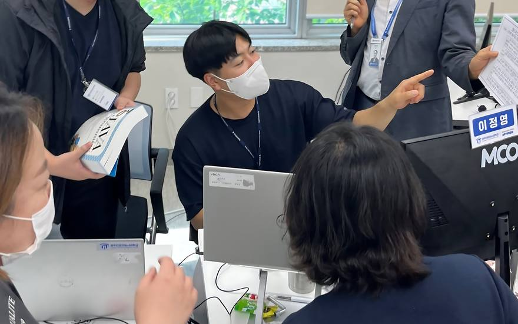
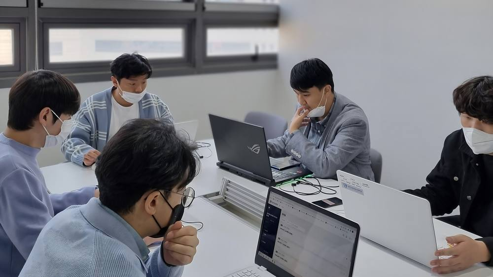
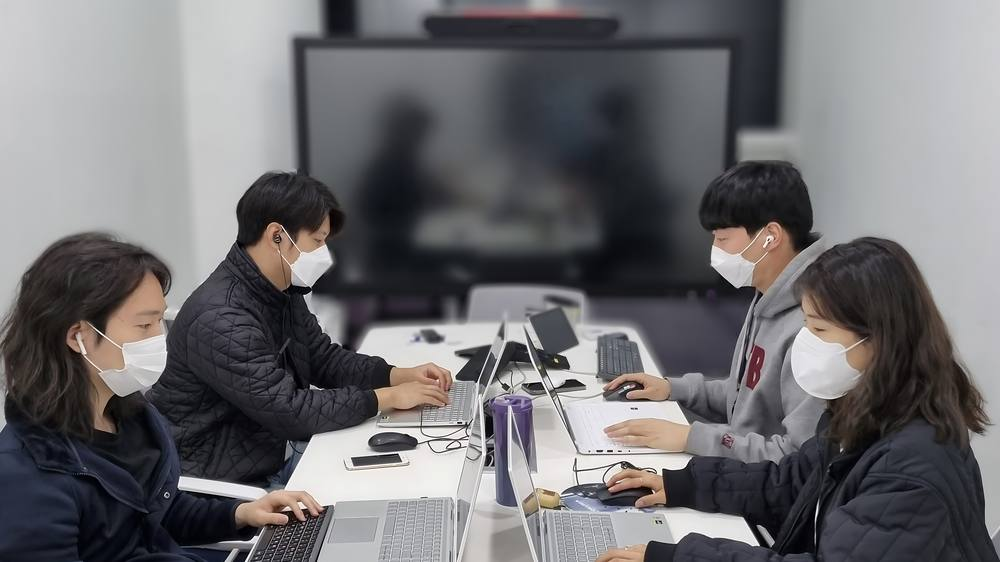
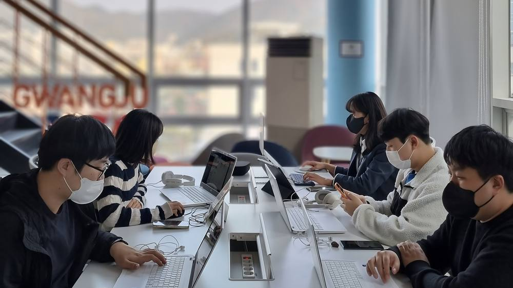

선배들의 이야기
먼저 다녀온
선배들의 SSUL
후기, 인터뷰, 프로젝트, 기수 기록까지 먼저 지나간 선배들이 남긴 이야기를 한곳에 모았어요.
- 56선배 후기
- 7선배 인터뷰
- 6프로젝트 사례
선배 이야기
먼저 겪어 본 선배들이 솔직하게 남겼어요

비전공자라면기획자였던 제가 AI 엔지니어로 바뀌기까지7기 · 김ㅇㅇ · AI 모델링 인터뷰 읽기후기 모아 보기
생활지원금으로 한 달을 꾸려본 기록
교통비 6만원, 점심값 20만원. 광주로 전입하면서 숙박비까지 받았더니 월세 부담이 확 줄었습니다.
헬스케어 도메인, 비전공자의 6주
의료 데이터는 전처리가 8할입니다. 모델을 돌리기 전에 결측치와 라벨 불균형에서 2주를 썼습니다.
격주 미팅이 있는 프로젝트의 리듬
기업 담당자와 2주에 한 번 만납니다. 그 사이에 뭘 보여줄지가 팀의 스프린트가 됩니다.
인턴십 두 달, 회사가 돌아가는 걸 처음 봤습니다
수료 직후 연계 인턴으로 들어갔습니다. 코드를 짜는 시간보다 왜 그렇게 짜는지 듣는 시간이 길었습니다.
AI카페가 없었으면 우리 팀도 없었습니다
점심마다 도시락을 데우러 오는 사람이 정해져 있는데, 그 줄에서 만난 네 명이 그대로 팀이 됐습니다.
AWS 특강에서 배운 건 결국 배포였습니다
모델은 만들었는데 어디에 올릴지를 몰랐습니다. 이틀 특강으로 EC2와 S3를 붙여봤고 그대로 썼습니다.
수료 두 달 뒤에 법인을 냈습니다
도약과정에서 만든 회의록 요약 서비스를 그대로 가져갔습니다. 창업 멘토링이 실제로 도움이 됐습니다.
직무가 생각과 달랐던 이야기
기획으로 들어왔는데 실제로는 데이터를 들여다보는 시간이 더 많았습니다.
프로젝트룸 예약 전쟁에서 살아남는 법
회의실은 예약 시스템으로 씁니다. 인기 시간대는 전날 밤에 다 나가서, 우리 팀은 고정 슬롯을 잡았습니다.
네이버에 질문 세 개를 준비해 갔습니다
구경만 하면 반나절이 그냥 갑니다. Q&A에 쓸 질문을 적어갔더니 돌아오는 버스가 달랐습니다.
개발 멘토가 아니라 디자인 멘토를 찾았습니다
성능은 어느 정도 나왔는데 아무도 안 쓸 것 같았습니다. 화면을 세 번 갈아엎고 나서야 통과됐습니다.
스타트업으로 간 이유
대기업 공채를 한 번 보고 접었습니다. 제가 만든 걸 바로 올려 볼 수 있는 쪽이 맞았습니다.
타지에서 올라와 방을 구한 순서
개강 한 달 전에 방을 봤습니다. 학교 근처 동은 그때쯤 매물이 제일 많았습니다.
보안은 처음엔 지루하고 나중에 다 쓰입니다
이론 비중이 높아서 초반에 지칩니다. 그런데 프로젝트에 들어가면 그 내용이 전부 근거가 됩니다.
실증은 절반이 현장입니다
데이터가 생각한 대로 나오지 않습니다. 현장에 나가야 왜 그런지 알게 됩니다.
수료 직후 세 달을 어떻게 썼나
바로 취업하지 못했습니다. 그 세 달에 뭘 했는지가 결국 면접에서 가장 많이 나온 이야기였습니다.
8층 구내식당을 쓰게 된 이유
밖에 나가면 왕복 30분은 각오해야 합니다. 생각보다 괜찮아서 결국 절반 이상은 여기서 먹었습니다.
기획 도메인은 개발을 못해도 됩니다
대신 말로 설명하는 걸 굉장히 많이 시킵니다. 발표와 문서가 곧 결과물입니다.
자유로운 만큼 스스로 굴려야 합니다
창업 유형은 정해진 요구사항이 없습니다. 방향을 정하는 것도 팀의 일입니다.
포트폴리오에 뭘 넣었나
프로젝트 세 개 중 하나만 남기고 둘을 뺐습니다. 덜어내는 게 더 어려웠습니다.
층별 휴게공간, 어디가 조용한가
3층이 제일 조용합니다. 통화하거나 잠깐 집중할 일이 있으면 거기로 올라갔습니다.
파이썬 기초는 떼고 오시는 게 좋습니다
수업이 기본 문법은 안다고 가정하고 갑니다. 준비과정 VOD를 제대로 듣는 게 실제로 차이를 만듭니다.
멘토링은 요청해야 잡힙니다
기획, 창업, 디자인, 개발, 비즈니스, 영업까지 분야가 있습니다. 필요한 걸 골라 요청하는 구조입니다.
면접에서 제일 많이 받은 질문
"비전공자인데 왜 이 일을 하려고 하나요"였습니다. 여덟 번 중 여섯 번 받았습니다.
퇴사하고 들어와서 계산해본 생활비
소득이 끊긴 상태로 8개월을 버텨야 하니, 지원금이 어디까지 커버되는지 먼저 계산했습니다.
포트폴리오 첨삭은 중간에 한 번 더
수료 직전에만 받으면 고칠 시간이 없습니다. 중간발표 무렵에 한 번 받아두는 걸 권합니다.
결과물 활용은 시작할 때 협의하세요
포트폴리오로 쓸 수 있는 범위는 기업과 협의해야 합니다. 끝나고 물으면 늦습니다.
첫 회사에서 쓴 기술은 절반이었습니다
배운 것 중 절반은 그대로 썼고, 나머지 절반은 회사 들어가서 새로 배웠습니다.
도시락으로 한 달에 15만원
싱크대가 있어서 설거지가 되고, 냉장고도 쓸 수 있습니다. 매일은 아니어도 절반만 싸 와도 차이가 큽니다.
금융 도메인은 데이터 구하기가 일입니다
공개 데이터셋을 미리 찾아두면 시작이 훨씬 빠릅니다. 없는 데이터를 기다리다 시간을 씁니다.
프로젝트 지원금은 클라우드로 나갑니다
저희는 대부분 인프라 비용이었습니다. 계획 없이 쓰면 후반에 모자랍니다.
취업연계 과정에서 알게 된 것
연계는 자리를 보장해 주는 게 아니라 문을 한 번 열어 주는 것이었습니다.
주차는 포기하시는 게 좋습니다
별도 주차장이 없습니다. 문화전당역 2번 출구 쪽에서 걸어오는 동선이 가장 무난했습니다.
피지컬 AI는 하드웨어를 만집니다
생각보다 실물을 다루는 일이 많습니다. 저는 납땜도 했습니다.
코드를 못 짜도 몫은 충분했습니다
데이터 정리와 기획으로 팀에 기여했습니다. 팀 안에서 역할은 생각보다 다양합니다.
수료하고 돌아보는 지원금 이야기
받을 때는 당연했는데, 나와서 다른 교육을 알아보니 이 조건이 흔하지 않다는 걸 알았습니다.
수업은 정시에 끝납니다, 복습이 문제입니다
시간표는 지켜집니다. 다만 복습을 건너뛰면 다음 주에 바로 티가 납니다.
5개월은 길지 않습니다
두 달차에 이미 시간이 없다고 느꼈습니다. 초반에 범위를 줄이는 결정이 중요합니다.
강의장과 프로젝트 공간을 오가는 하루
오전에는 강의장, 오후에는 프로젝트 공간. 짐을 어떻게 두고 다니느냐가 은근히 중요합니다.
탐방에서 본 실무와 수업의 거리
우리가 배우는 것과 회사에서 쓰는 것이 얼마나 겹치는지 확인하는 자리였습니다.
중간발표에서 갈아엎은 팀이 잘 됐습니다
늦었다고 생각했는데 아니었습니다. 그때 방향을 바꾼 팀이 결국 제일 좋은 결과를 냈습니다.
노트북은 빌려 쓰는 것으로 충분했습니다
대여해주는 장비로 8개월을 다 썼습니다. 모니터도 같이 나와서 따로 살 일이 없었습니다.
오후 실습을 빠지면 남는 게 없습니다
오전 이론만 듣고 빠지면 그날 배운 게 사라집니다. 핵심은 오후에 손으로 하는 시간입니다.
팀은 아이디어보다 사람이 먼저입니다
도메인 안에서 팀이 짜입니다. 무엇을 만들지는 그 다음에 정해지는 구조입니다.
회의실 말고 강의장에 남는 방법
저녁에 강의장이 비면 그대로 씁니다. 다만 몇 시까지 있을 수 있는지는 먼저 확인하세요.
도메인은 흥미 반, 시장 반으로 골랐습니다
여섯 갈래 중에 고르는 날이 옵니다. 재미만 보고 고르면 후반이 힘들 수 있습니다.
NDA가 있는 프로젝트의 기록 남기기
공개 못 하는 내용이 있으면 구조와 판단 과정만 따로 정리해 두세요.
교통비를 줄이려고 정기권을 끊었습니다
매일 왕복이면 정기권이 확실히 쌉니다. 한 달 정산해보고 바로 바꿨습니다.
EST 탐방에서 본 개발 조직
제품이 어떻게 나뉘어 굴러가는지 눈으로 봤습니다. 팀 역할 나누는 데 참고가 됐습니다.
멘토링 한 번을 제대로 쓰는 법
보여줄 걸 미리 만들어 가면 한 시간이 완전히 달라집니다.
냉장고 쓰는 암묵적인 규칙
이름을 써 붙이는 게 기본입니다. 금요일에는 각자 정리하고 가는 분위기였습니다.
발표 특강을 듣고 슬라이드를 다 지웠습니다
글자를 줄이고 한 장에 한 메시지로 바꿨습니다. 중간발표 반응이 확실히 달랐습니다.
팀이 깨졌을 때 어떻게 했나
두 달차에 방향이 갈렸습니다. 감정 상하기 전에 역할과 기대치를 다시 적었습니다.
지원금을 장비가 아니라 시간에 썼습니다
새 장비를 사는 대신 아르바이트를 줄였습니다. 공부할 시간을 산 셈입니다.
3기 때 배운 게 지금도 쓰이나
도구는 많이 바뀌었지만 데이터를 의심하는 습관은 그대로 남았습니다.
결과가 안 나올 때 남기는 기록
성능이 기대에 못 미쳤습니다. 대신 시도한 것과 이유를 전부 남겼습니다.
후기는 작성자가 다닌 기수 기준이에요. 지원금·일정 같은 제도는 기수마다 달라지니 최신 모집 공고를 함께 확인하세요.
선배 이야기
여덟 달을 먼저 지나온 선배들에게 물어봤어요
기획자였던 제가 AI 엔지니어로 바뀌기까지
비전공자 비율이 80%입니다. 다들 비슷하게 시작합니다. 다만 8개월을 온전히 쓸 수 있는 상황인지는 꼭 확인하고 오세요.
3년차 서비스 기획자였습니다. 모델을 직접 만들어보고 싶어서 8개월을 비웠습니다.

서버를 한 번도 안 만져본 문과생의 8개월
컨테이너입니다. VM과 뭐가 다른지 한 달을 헤맸습니다. 결국 직접 Dockerfile을 20번쯤 써보고 나서야 감이 왔습니다.
쿠버네티스라는 단어를 입교식에서 처음 들었습니다.
6기 수료생 인터뷰 — 인프라 직군
쿠버네티스라는 말을 입교식에서 처음 들었다는 사람의 여덟 달.

도약과정 프로젝트를 그대로 창업으로
기업연계는 과제가 정해져 있고, 실증은 현장이 정해져 있습니다. 창업만 아무것도 안 정해져 있었고 그게 좋았습니다.
5개월 동안 만든 걸 버리기 아까웠습니다.
지금 다니는 중입니다, 4개월차 기록
수료 후기가 아니라 진행형 기록입니다.
노코드로 시작해 화면을 만들게 되기까지
디자인 툴만 쓸 줄 알았습니다.

3기 수료생이 보는 4년 뒤
수료가 끝이 아니라 시작입니다. 여기서 만든 포트폴리오는 6개월이면 낡습니다. 습관을 가져가세요.
가장 오래된 기수 중 하나입니다.
전체 인터뷰
고른 조건에 맞는 인터뷰가 없어요.
글과 영상을 한 목록에 섞어 두었어요 · 사진과 영상은 초상권·재게시 동의가 확인된 자료만 올립니다. 지금 보이는 글과 이름은 시안용 더미입니다.

기획자였던 제가 AI 엔지니어로 바뀌기까지
3년차 서비스 기획자였습니다. 모델을 직접 만들어보고 싶어서 8개월을 비웠습니다.
서비스 기획서를 쓰다 보면 결국 '이게 기술적으로 되나'에서 막힙니다. 대화형 기능을 기획하면서 NLP를 몰라서 요구사항을 제대로 못 적었던 경험이 계기였습니다.
온라인 강의를 두어 개 듣다가 포기했습니다. 혼자서는 안 되겠더군요. 여기는 전일제라 도망갈 데가 없다는 점이 오히려 좋았습니다. 지원금이 나와서 8개월을 비울 수 있었던 것도 컸습니다.
첫 두 달은 솔직히 힘들었습니다. 준비과정 VOD를 대충 들었던 게 성장과정 첫 주부터 티가 났습니다. 다시 돌아가면 준비과정을 두 번 듣겠습니다.
도약과정 5개월입니다. 수업만 들었다면 절대 못 만들었을 걸 팀으로는 만들어냈습니다. 코드 리뷰를 받으면서 배운 게 수업 시간보다 많았습니다.
제가 제일 못하는 사람이었습니다. 대신 요구사항 정리와 사용자 테스트 설계를 맡았고, 그게 팀에서 제 자리가 됐습니다. 모든 걸 다 잘할 필요는 없더군요.
비전공자 비율이 80%입니다. 다들 비슷하게 시작합니다. 다만 8개월을 온전히 쓸 수 있는 상황인지는 꼭 확인하고 오세요.

서버를 한 번도 안 만져본 문과생의 8개월
쿠버네티스라는 단어를 입교식에서 처음 들었습니다.
모델을 만드는 사람은 많은데 돌아가게 하는 사람은 적다고 들었습니다. 경쟁이 덜한 쪽을 고른 셈인데, 결과적으로 잘한 선택이었습니다.
컨테이너입니다. VM과 뭐가 다른지 한 달을 헤맸습니다. 결국 직접 Dockerfile을 20번쯤 써보고 나서야 감이 왔습니다.
배포 전담이었습니다. 팀원들이 만든 걸 올리고 모니터링하는 일이요. 새벽에 알람 받고 일어난 적도 있습니다.
지역 SI 기업에서 클라우드 엔지니어로 일하고 있습니다. 수업에서 배운 것 중 절반 정도는 실무에서 그대로 씁니다.

도약과정 프로젝트를 그대로 창업으로
5개월 동안 만든 걸 버리기 아까웠습니다.
기업연계는 과제가 정해져 있고, 실증은 현장이 정해져 있습니다. 창업만 아무것도 안 정해져 있었고 그게 좋았습니다.
수료가 12월이었고 2월에 냈습니다. 중간에 정부 지원사업 서류를 쓰느라 한 달을 썼습니다.
사업자 등록 절차부터 초기 지분 이야기까지 들었습니다. 개발 멘토보다 비즈니스 멘토를 더 많이 찾았습니다.
네 명 중 세 명이 남았습니다. 한 명은 취업했지만 여전히 자문으로 도와주고 있습니다.
지금 다니는 중입니다, 4개월차 기록
수료 후기가 아니라 진행형 기록입니다.
9시에 출석하고 오전에 이론, 오후에 실습입니다. 6시에 정시로 끝나지만 프로젝트 기간에 들어가면서 남는 날이 늘었습니다.
성장과정 3주차입니다. 선형대수가 나오는데 전공자들은 복습이고 저는 처음이었습니다. 스터디를 만들어서 넘겼습니다.
구내식당 혼잡도 예측을 만들고 있습니다. 출입 로그를 받는 데까지가 제일 오래 걸렸습니다.
노코드로 시작해 화면을 만들게 되기까지
디자인 툴만 쓸 줄 알았습니다.
전공필수에 노코드와 AI 코딩 에이전트 기반 구현이 있습니다. 거기서 시작해 팀 프로젝트에서 화면을 전담했습니다.
거의 매일 썼습니다. 다만 나오는 코드를 읽을 줄 알아야 고칠 수 있어서, 결국 기초는 따로 봤습니다.
채용박람회에서 만난 회사에 들어갔습니다. 포트폴리오는 도약과정 결과물 하나로 갔습니다.
6기 수료생 인터뷰 — 인프라 직군
쿠버네티스라는 말을 입교식에서 처음 들었다는 사람의 여덟 달.
영상 인터뷰예요. 위 화면에서 바로 재생됩니다. 영상 내용을 글로 옮긴 요약이 준비되면 이 아래에 함께 실어요.

3기 수료생이 보는 4년 뒤
가장 오래된 기수 중 하나입니다.
그때는 온라인 비중이 컸고 프로젝트 기간도 짧았습니다. 지금이 훨씬 촘촘합니다.
첫 직장은 스타트업이었고, 지금은 대기업 AI 조직에 있습니다. 8개월이 첫 단추였던 건 분명합니다.
수료가 끝이 아니라 시작입니다. 여기서 만든 포트폴리오는 6개월이면 낡습니다. 습관을 가져가세요.
프로젝트 아카이브
선배들은 여기서 이런 걸 만들었어요
손끝 — 시각장애인 보행 보조 앱
휴대폰 카메라만으로 횡단보도 신호와 점자블록을 읽어 음성으로 알려줍니다. 광주 동구 일대에서 2주간 실증했습니다.
- TEAM
- AI 모델링 2반 · 5명
- TYPE
- 실증
- TERM
- 도약과정 720H
밥값 — 구내식당 혼잡도 예측
출입 게이트 로그로 8층 구내식당의 30분 단위 혼잡도를 예측합니다. 사내 슬랙 봇으로 붙였습니다.
- TEAM
- 데이터 분석 1반 · 4명
- TYPE
- 기업연계
- TERM
- 도약과정 720H
틈 — 중소병원 판독 보조
흉부 X-ray에서 이상 소견 후보 영역을 표시해 판독 순서를 정렬합니다. 지역 병원 두 곳과 함께 검증했습니다.
- TEAM
- 헬스케어 도메인 · 6명
- TYPE
- 기업연계
- TERM
- 도약과정 720H
돌아봄 — 공장 설비 이상 탐지
진동 센서 스트림에서 베어링 이상을 실시간 감지합니다. 라즈베리파이 엣지 환경에 올려 현장 테스트했습니다.
- TEAM
- 인프라 1반 · 5명
- TYPE
- 실증
- TERM
- 도약과정 720H
말줄임 — 회의록 자동 요약
녹취를 화자별로 나눠 결정사항과 할 일만 추립니다. 수료 후 법인 설립까지 이어진 팀입니다.
- TEAM
- 기획 2반 · 4명
- TYPE
- 창업
- TERM
- 도약과정 720H
파수 — 사내 문서 유출 탐지
문서 접근 로그를 그래프로 만들어 평소와 다른 열람 패턴을 잡아냅니다.
- TEAM
- 보안 도메인 · 5명
- TYPE
- 기업연계
- TERM
- 도약과정 720H
8개월 뒤의 나
비전공자로 시작해도,
끝에는 내 이름이 들어간 포트폴리오가 남아요
- 비전공자기획자도 문과생도 출발선은 같았어요
준비과정 VOD로 기초를 다지고, 성장과정에서 매일 실습하며 코드 한 줄부터 따라잡았어요.
- 프로젝트 · 수상팀으로 만든 서비스가 무대에 올랐어요
도약과정 다섯 달 동안 기업 과제와 현장 실증을 거친 결과물로 성과발표회와 공모전에 나갔어요.
- 포트폴리오면접에서 꺼낼 이야기가 생겼어요
문제 정의부터 배포까지 직접 해 본 기록이 그대로 포트폴리오가 되고, 취업 컨설팅에서 함께 다듬었어요.
손끝 — 시각장애인 보행 보조 앱
휴대폰 카메라만으로 횡단보도 신호와 점자블록을 읽어 음성으로 알려줍니다. 광주 동구 일대에서 2주간 실증했습니다.
문제 정의
어떤 문제를, 누구를 위해 풀었는지 들어갈 자리예요.
접근 방법
데이터 · 모델 · 서비스 구조를 어떻게 잡았는지 들어갈 자리예요.
결과와 다음 단계
실증 · 검증 결과와 수료 뒤 이어진 이야기가 들어갈 자리예요.
시안이라 본문은 자리만 잡아 두었어요. 관리자가 프로젝트를 올리면 이 자리에 내용과 시연 영상 · 발표 자료 링크가 들어갑니다.
밥값 — 구내식당 혼잡도 예측
출입 게이트 로그로 8층 구내식당의 30분 단위 혼잡도를 예측합니다. 사내 슬랙 봇으로 붙였습니다.
문제 정의
어떤 문제를, 누구를 위해 풀었는지 들어갈 자리예요.
접근 방법
데이터 · 모델 · 서비스 구조를 어떻게 잡았는지 들어갈 자리예요.
결과와 다음 단계
실증 · 검증 결과와 수료 뒤 이어진 이야기가 들어갈 자리예요.
시안이라 본문은 자리만 잡아 두었어요. 관리자가 프로젝트를 올리면 이 자리에 내용과 시연 영상 · 발표 자료 링크가 들어갑니다.
틈 — 중소병원 판독 보조
흉부 X-ray에서 이상 소견 후보 영역을 표시해 판독 순서를 정렬합니다. 지역 병원 두 곳과 함께 검증했습니다.
문제 정의
어떤 문제를, 누구를 위해 풀었는지 들어갈 자리예요.
접근 방법
데이터 · 모델 · 서비스 구조를 어떻게 잡았는지 들어갈 자리예요.
결과와 다음 단계
실증 · 검증 결과와 수료 뒤 이어진 이야기가 들어갈 자리예요.
시안이라 본문은 자리만 잡아 두었어요. 관리자가 프로젝트를 올리면 이 자리에 내용과 시연 영상 · 발표 자료 링크가 들어갑니다.
돌아봄 — 공장 설비 이상 탐지
진동 센서 스트림에서 베어링 이상을 실시간 감지합니다. 라즈베리파이 엣지 환경에 올려 현장 테스트했습니다.
문제 정의
어떤 문제를, 누구를 위해 풀었는지 들어갈 자리예요.
접근 방법
데이터 · 모델 · 서비스 구조를 어떻게 잡았는지 들어갈 자리예요.
결과와 다음 단계
실증 · 검증 결과와 수료 뒤 이어진 이야기가 들어갈 자리예요.
시안이라 본문은 자리만 잡아 두었어요. 관리자가 프로젝트를 올리면 이 자리에 내용과 시연 영상 · 발표 자료 링크가 들어갑니다.
말줄임 — 회의록 자동 요약
녹취를 화자별로 나눠 결정사항과 할 일만 추립니다. 수료 후 법인 설립까지 이어진 팀입니다.
문제 정의
어떤 문제를, 누구를 위해 풀었는지 들어갈 자리예요.
접근 방법
데이터 · 모델 · 서비스 구조를 어떻게 잡았는지 들어갈 자리예요.
결과와 다음 단계
실증 · 검증 결과와 수료 뒤 이어진 이야기가 들어갈 자리예요.
시안이라 본문은 자리만 잡아 두었어요. 관리자가 프로젝트를 올리면 이 자리에 내용과 시연 영상 · 발표 자료 링크가 들어갑니다.
파수 — 사내 문서 유출 탐지
문서 접근 로그를 그래프로 만들어 평소와 다른 열람 패턴을 잡아냅니다.
문제 정의
어떤 문제를, 누구를 위해 풀었는지 들어갈 자리예요.
접근 방법
데이터 · 모델 · 서비스 구조를 어떻게 잡았는지 들어갈 자리예요.
결과와 다음 단계
실증 · 검증 결과와 수료 뒤 이어진 이야기가 들어갈 자리예요.
시안이라 본문은 자리만 잡아 두었어요. 관리자가 프로젝트를 올리면 이 자리에 내용과 시연 영상 · 발표 자료 링크가 들어갑니다.
기수별 이모저모
입교식부터 수료식까지, 기수마다 이런 일이 있었어요
6기와 무엇이 달라졌나
| 수업 방식 | 준비·성장 일부 온라인 병행 | AI 준비과정(VOD) 외 전 과정 오프라인 |
|---|---|---|
| 프로젝트 | 520시간 | 720시간 — 기업연계·실증·창업 중 택 1 |
| 해커톤 | 전 직군 통합 2박 3일 | 폐지 |
| 트랙 구성 | 7개 트랙 | 직군별 심화 + 산업 도메인 2층 구조 |
| 전형 | 서류 → 인터뷰 → Pre-Training → 퀴즈 | 서류 → 코딩테스트 → 면접·인적성 |
| 지원금 | 생활지원금 | 생활지원금 + 프로젝트 지원금 200만원 신설 |
| 지원 대상 | 4학년·졸업예정·졸업유예자 중심 | 졸업생·스타트업 재직자까지 확대 |
AI카페에서 시작된 팀
도시락 데우다 만난 사람들과 그대로 한 팀이 됐습니다. 프로젝트룸 예약 전쟁의 서막.
도메인 선택의 날
헬스케어부터 기획까지 여섯 갈래. 반쯤은 흥미로, 반쯤은 취업 시장을 보고 골랐습니다.
 5:40
5:40
AI카페·프로젝트룸 둘러보기
수업 말고 나머지 시간을 보내는 공간들을 한 바퀴 돌았습니다.
전면 오프라인으로 바뀐 첫 학기
준비과정만 VOD로 남고 나머지가 전부 강의장으로 들어왔습니다. 출석과 팀 작업의 리듬이 어떻게 달라졌는지.
 3:12
3:12
7기 입교식 하이라이트
테이프를 끊고 여덟 달이 시작된 날을 3분으로 담았습니다.
AI커리어 빌드업 & 동문 네트워크
김대중컨벤션센터에서 선배 기수들과 처음 마주 앉은 날.
 4:47
4:47
도약과정 중간발표회 현장
절반쯤 온 팀들이 무엇을 보여줬는지 기록했습니다.
마지막 해커톤, 소노벨 변산 2박 3일
전 직군이 한자리에 모인 마지막 기수. 밤새 만들고 아침에 발표했습니다.
 6:22
6:22기업탐방 브이로그 — 네이버·AWS
하루에 두 곳을 돌며 실무자에게 직접 들은 이야기입니다.
1,551명이 지원한 해
10개 반, 7개 트랙. 입교생 열에 여덟이 비전공자였습니다.
중간발표회에서 갈린 팀들
절반은 방향을 틀었고, 절반은 그대로 갔습니다. 돌아보면 둘 다 맞았습니다.
기업탐방 — 이스트소프트·네이버·AWS
회사가 실제로 어떻게 굴러가는지 처음 본 3일.

첫 성과공유회
강당을 빌려 한 해를 정리했습니다. 발표 10분, 준비 2주.
취업박람회 부스를 돌던 하루
이력서 30부를 들고 갔는데 마지막 한 장까지 돌렸습니다.
성과공유회 및 수료식
여덟 달을 함께 보낸 사람들이 마지막으로 모였습니다.
11:30
3기 성과공유회 및 수료식
성과 발표부터 수료증 수여까지, 하루를 통째로 담았습니다.
3기 입교식 — 테이프를 끊던 날
광주 동구 제봉로 92에 처음 모인 날의 기록.
생활지원금으로 한 달을 꾸려본 기록
교통비 6만원, 점심값 20만원. 광주로 전입하면서 숙박비까지 받았더니 월세 부담이 확 줄었습니다.
교통비가 대략 6만원, 점심값이 20만원 안쪽이었습니다. 도시락을 싸 온 날이 많아서 식비는 더 줄었고, 남는 돈은 대부분 커피와 간식으로 나갔습니다. 지원금만으로 통학과 끼니가 해결되는 수준이라고 보시면 됩니다.
타지에서 올라온 경우 숙박비 지원을 받을 수 있는데, 신청할 때 전입신고가 된 등본이 필요했습니다. 계약하고 나서 등본 떼는 데 며칠 걸리니 개강 전에 미리 정리해 두시는 걸 권합니다.
선배 후기를 보고 날짜를 예상했다가 어긋난 적이 있습니다. 고정된 날짜가 아니라 매달 정산 일정에 따라 움직이기 때문에, 첫 달은 여유 자금을 조금 두는 편이 안전합니다.
헬스케어 도메인, 비전공자의 6주
의료 데이터는 전처리가 8할입니다. 모델을 돌리기 전에 결측치와 라벨 불균형에서 2주를 썼습니다.
강의에서 배운 모델을 바로 적용할 수 있을 거라 생각했는데, 실제 데이터는 비어 있는 칸이 많았습니다. 결측치를 어떻게 처리할지 정하는 데만 며칠이 걸렸습니다.
양성 사례가 전체의 몇 퍼센트밖에 되지 않아서, 정확도만 보면 아무것도 안 해도 높게 나옵니다. 지표를 다시 고르는 것부터 배웠습니다.
이 과정을 한 번 겪고 나면 다른 도메인 데이터는 훨씬 쉬워 보입니다. 어려운 도메인을 먼저 고른 게 결과적으로 도움이 됐습니다.
격주 미팅이 있는 프로젝트의 리듬
기업 담당자와 2주에 한 번 만납니다. 그 사이에 뭘 보여줄지가 팀의 스프린트가 됩니다.
팀 내부 약속은 미뤄지기 쉽지만, 외부 미팅은 미룰 수 없습니다. 그 날짜가 자연스럽게 마감이 됐습니다.
주제와 방향이 기업 요구에 맞춰집니다. 하고 싶은 걸 하려면 창업 유형이 맞을 수 있습니다.
실제 데이터와 현업의 피드백을 받습니다. 결과물을 포트폴리오로 쓸 때 설명이 훨씬 구체적입니다.
인턴십 두 달, 회사가 돌아가는 걸 처음 봤습니다
수료 직후 연계 인턴으로 들어갔습니다. 코드를 짜는 시간보다 왜 그렇게 짜는지 듣는 시간이 길었습니다.
제가 만든 기능이 실제 사용자에게 나가기까지 거치는 단계가 생각보다 많았습니다. 리뷰, 스테이징, 배포 승인까지요. 학습용 프로젝트에서는 없던 절차입니다.
두 달이 끝날 때 가장 크게 남은 건 기술이 아니라 질문하는 법이었습니다. 모르는 걸 혼자 세 시간 붙잡는 것보다 십 분 물어보는 게 낫다는 걸 늦게 배웠습니다.
AI카페가 없었으면 우리 팀도 없었습니다
점심마다 도시락을 데우러 오는 사람이 정해져 있는데, 그 줄에서 만난 네 명이 그대로 팀이 됐습니다.
전자레인지가 두 대뿐이라 11시 50분쯤이면 자연스럽게 줄이 생깁니다. 매일 같은 시간에 마주치던 네 명이 이야기를 트게 됐고, 도메인 팀 편성 때 그대로 한 팀이 됐습니다.
전자레인지 두 대, 냉장고, 제빙기, 싱크대, 그리고 앉아서 먹을 수 있는 테이블이 있습니다. 설거지가 가능해서 도시락 용기를 들고 다니는 게 부담스럽지 않았습니다.
제빙기가 있다는 걸 3개월 지나서 알았습니다. 광주 여름을 겪어보면 이게 왜 중요한지 아실 겁니다.
AWS 특강에서 배운 건 결국 배포였습니다
모델은 만들었는데 어디에 올릴지를 몰랐습니다. 이틀 특강으로 EC2와 S3를 붙여봤고 그대로 썼습니다.
모델을 만드는 것과 그걸 누군가 쓸 수 있게 올리는 것은 다른 일입니다. 특강이 그 간격을 메워줬습니다.
슬라이드만 보면 남는 게 없습니다. 그 자리에서 인스턴스를 띄우고 붙여본 게 프로젝트에 그대로 이어졌습니다.
과금 구조를 같이 배운 게 나중에 프로젝트 지원금을 계획할 때 도움이 됐습니다.
수료 두 달 뒤에 법인을 냈습니다
도약과정에서 만든 회의록 요약 서비스를 그대로 가져갔습니다. 창업 멘토링이 실제로 도움이 됐습니다.
과정이 끝나고 새로 시작한 게 아니라, 만들던 걸 계속 만들었습니다. 8개월이 그대로 초기 개발 기간이 된 셈입니다.
사업자 등록 절차부터 초기 지분 구성까지 이야기했습니다. 기술 외의 부분에서 막힐 뻔한 걸 미리 정리했습니다.
창업 유형은 일정 관리를 스스로 해야 합니다. 방향을 잡아줄 사람이 팀에 한 명은 필요합니다.
직무가 생각과 달랐던 이야기
기획으로 들어왔는데 실제로는 데이터를 들여다보는 시간이 더 많았습니다.
기획이라고 하면 문서를 쓰는 일이라고 생각했습니다. 막상 해 보니 숫자를 먼저 보지 않으면 쓸 말이 없었습니다.
도중에 분야를 바꿀까 고민했지만 바꾸지 않았습니다. 대신 데이터 분석 수업을 청강했고, 그게 지금 일에서 제일 많이 쓰입니다.
프로젝트룸 예약 전쟁에서 살아남는 법
회의실은 예약 시스템으로 씁니다. 인기 시간대는 전날 밤에 다 나가서, 우리 팀은 고정 슬롯을 잡았습니다.
오픈 시각에 맞춰 알람을 맞춰두는 사람이 팀마다 한 명씩은 있습니다. 오후 2시에서 5시 사이가 가장 빨리 나가고, 오전 시간대는 비교적 여유가 있습니다.
매번 경쟁하는 대신 화요일과 목요일 오후를 팀 정기 회의로 고정했습니다. 회의 시간이 정해지니 그 사이에 각자 뭘 해와야 하는지가 자동으로 정리됐습니다.
방을 못 잡은 날은 층별 휴게공간을 썼습니다. 3층이 가장 조용해서 통화나 짧은 스탠드업에 적당합니다.
네이버에 질문 세 개를 준비해 갔습니다
구경만 하면 반나절이 그냥 갑니다. Q&A에 쓸 질문을 적어갔더니 돌아오는 버스가 달랐습니다.
같은 자리에 있어도 질문을 준비한 사람과 아닌 사람의 기록이 다릅니다. 저는 직무 전환, 포트폴리오, 팀 구조에 대해 하나씩 물었습니다.
버스에서 바로 메모를 옮겼습니다. 하루만 지나도 기억이 흐려집니다.
EST와 AWS 탐방도 결이 달랐습니다. 회사마다 보여주는 게 다르니 매번 질문을 새로 준비하는 편이 낫습니다.
개발 멘토가 아니라 디자인 멘토를 찾았습니다
성능은 어느 정도 나왔는데 아무도 안 쓸 것 같았습니다. 화면을 세 번 갈아엎고 나서야 통과됐습니다.
지표를 올리는 데만 집중했는데, 사용자 테스트에서 아무도 끝까지 못 썼습니다. 원인은 화면이었습니다.
기능을 줄이고, 순서를 바꾸고, 문구를 다시 썼습니다. 모델은 손대지 않았는데 결과가 달라졌습니다.
가만히 있으면 아무도 찾아오지 않습니다. 필요한 분야를 골라 먼저 요청하는 게 맞습니다.
스타트업으로 간 이유
대기업 공채를 한 번 보고 접었습니다. 제가 만든 걸 바로 올려 볼 수 있는 쪽이 맞았습니다.
규모가 작으면 제 손이 닿는 범위가 넓습니다. 배포도 모니터링도 제가 합니다. 배우는 속도는 분명히 빠릅니다.
대신 알려 주는 사람이 없습니다. 수료 전에 기초를 얼마나 단단히 해 뒀는지가 입사 후 반년을 가릅니다.
타지에서 올라와 방을 구한 순서
개강 한 달 전에 방을 봤습니다. 학교 근처 동은 그때쯤 매물이 제일 많았습니다.
두 달 전에는 매물이 별로 없었고, 개강 직전에는 이미 좋은 방이 빠져 있었습니다. 한 달 전쯤이 선택지가 가장 넓었습니다.
싼 방을 찾아 멀리 가면 교통비와 시간이 같이 늘어납니다. 걸어서 갈 수 있는 거리면 저녁에 남아서 작업하기도 훨씬 수월합니다.
숙박비 지원에는 조건이 있으니 계약서에 서명하기 전에 사무국에 한 번 확인하시길 권합니다.
보안은 처음엔 지루하고 나중에 다 쓰입니다
이론 비중이 높아서 초반에 지칩니다. 그런데 프로젝트에 들어가면 그 내용이 전부 근거가 됩니다.
개념과 규격을 익히는 시간이 깁니다. 코드를 바로 짜고 싶은 사람에게는 답답할 수 있습니다.
설계할 때 왜 이렇게 해야 하는지 설명할 수 있는 근거가 됩니다. 발표에서 질문이 들어와도 막히지 않았습니다.
실증은 절반이 현장입니다
데이터가 생각한 대로 나오지 않습니다. 현장에 나가야 왜 그런지 알게 됩니다.
센서 위치, 사람의 동선, 시간대. 수치만 보고 세운 가설이 현장에서 계속 틀렸습니다.
현장 방문 일정을 빼고 계획을 짜면 반드시 밀립니다. 처음부터 왕복 시간을 포함해 계산하는 게 낫습니다.
수료 직후 세 달을 어떻게 썼나
바로 취업하지 못했습니다. 그 세 달에 뭘 했는지가 결국 면접에서 가장 많이 나온 이야기였습니다.
프로젝트를 다시 열어 고쳤습니다. 과정 중에는 시간이 없어서 넘겼던 부분들이 있었는데, 그걸 메우는 데 한 달이 걸렸습니다.
공백을 숨기려 하지 않았습니다. 무엇을 보완했는지 적어 두니 오히려 질문이 그쪽으로 모였습니다.
8층 구내식당을 쓰게 된 이유
밖에 나가면 왕복 30분은 각오해야 합니다. 생각보다 괜찮아서 결국 절반 이상은 여기서 먹었습니다.
오후 실습이 바로 이어지는 날에는 밖에 나갈 여유가 없습니다. 식당이 같은 건물에 있다는 게 생각보다 큰 차이를 만듭니다.
정오 직후 20분이 가장 붐빕니다. 수업이 조금 일찍 끝나는 날은 먼저 올라가는 편이 낫습니다.
근처에 카페가 몇 곳 있어서 팀 회의를 겸해 나가기도 했습니다. 다만 점심시간을 쪼개 쓰게 되니 주 1~2회가 적당했습니다.
기획 도메인은 개발을 못해도 됩니다
대신 말로 설명하는 걸 굉장히 많이 시킵니다. 발표와 문서가 곧 결과물입니다.
문제를 정의하고, 사용자를 정하고, 왜 이 방식인지 설명하는 일이 중심입니다. 화면 설계와 지표 정의도 포함됩니다.
팀 안에서 개발 담당과 계속 조율해야 합니다. 기술을 직접 다루지 않아도 무엇이 가능한지는 알아야 대화가 됩니다.
비전공자라고 개발을 꼭 해야 하는 건 아닙니다. 다만 말과 글로 설득하는 걸 싫어하면 힘듭니다.
자유로운 만큼 스스로 굴려야 합니다
창업 유형은 정해진 요구사항이 없습니다. 방향을 정하는 것도 팀의 일입니다.
무엇을 만들지 정하는 데 한 달을 쓰는 팀과, 2주에 정하고 만들기 시작하는 팀의 결과가 달랐습니다.
암묵적으로 나누면 결국 한 사람에게 몰립니다. 초반에 문서로 적어두는 걸 권합니다.
포트폴리오에 뭘 넣었나
프로젝트 세 개 중 하나만 남기고 둘을 뺐습니다. 덜어내는 게 더 어려웠습니다.
비슷한 걸 여러 개 두면 하나도 깊어 보이지 않습니다. 가장 오래 붙잡았던 하나를 골라 과정까지 적었습니다.
결과 수치보다 막혔던 지점과 그걸 어떻게 돌아갔는지를 적은 부분에서 질문이 많이 나왔습니다.
층별 휴게공간, 어디가 조용한가
3층이 제일 조용합니다. 통화하거나 잠깐 집중할 일이 있으면 거기로 올라갔습니다.
사람이 많이 지나는 층은 대화 소리가 계속 들립니다. 조용히 읽거나 통화할 일이 있으면 통행이 적은 층을 찾는 편이 낫습니다.
강의장에 계속 앉아 있으면 오후에 집중이 무너집니다. 쉬는 시간마다 자리를 옮기는 것만으로도 체감이 달랐습니다.
파이썬 기초는 떼고 오시는 게 좋습니다
수업이 기본 문법은 안다고 가정하고 갑니다. 준비과정 VOD를 제대로 듣는 게 실제로 차이를 만듭니다.
준비과정 분량이 적지 않은데, 이걸 성실히 들은 사람과 아닌 사람의 첫 달이 확연히 다릅니다.
예제를 그대로 따라 치면 되는 것 같지만, 조금만 바꿔도 막힙니다. 스스로 변형해보는 연습을 권합니다.
멘토링은 요청해야 잡힙니다
기획, 창업, 디자인, 개발, 비즈니스, 영업까지 분야가 있습니다. 필요한 걸 골라 요청하는 구조입니다.
개발만 있는 게 아닙니다. 사업성이나 영업 쪽 조언이 필요한 시점이 반드시 옵니다.
막연히 봐달라고 하면 일반적인 답이 돌아옵니다. 구체적인 결정 지점을 들고 가면 답도 구체적입니다.
면접에서 제일 많이 받은 질문
"비전공자인데 왜 이 일을 하려고 하나요"였습니다. 여덟 번 중 여섯 번 받았습니다.
처음에는 열정으로 답했습니다. 잘 안 통했습니다. 나중에는 과정에서 겪은 구체적인 장면 하나를 꺼내 답했고, 그쪽이 훨씬 나았습니다.
전공을 약점으로 설명하지 않는 게 중요했습니다. 전에 하던 일에서 가져온 게 무엇인지 말할 수 있으면 질문이 달라집니다.
퇴사하고 들어와서 계산해본 생활비
소득이 끊긴 상태로 8개월을 버텨야 하니, 지원금이 어디까지 커버되는지 먼저 계산했습니다.
월세와 통신비 같은 고정비는 지원금으로 다 해결되지 않습니다. 시작 전에 몇 달치 여유 자금이 있는지 확인하는 게 먼저였습니다.
통학과 점심에 들어가는 돈은 지원금 범위 안에서 대부분 정리됐습니다. 그 외 지출을 얼마나 줄일 수 있는지가 관건입니다.
시간이 남는다고 느낀 적은 거의 없었습니다. 병행을 고민하고 계시다면 성장과정부터는 쉽지 않다고 말씀드리고 싶습니다.
포트폴리오 첨삭은 중간에 한 번 더
수료 직전에만 받으면 고칠 시간이 없습니다. 중간발표 무렵에 한 번 받아두는 걸 권합니다.
프로젝트가 끝난 뒤에 지적을 받으면 반영할 여지가 적습니다. 진행 중에 들으면 결과물 자체를 바꿀 수 있습니다.
기술 나열보다 문제와 판단 과정을 보여달라는 피드백이 가장 많았습니다.
결과물 활용은 시작할 때 협의하세요
포트폴리오로 쓸 수 있는 범위는 기업과 협의해야 합니다. 끝나고 물으면 늦습니다.
어디까지 공개할 수 있는지, 코드와 화면을 보여줘도 되는지 처음에 확인했습니다.
실제 데이터를 못 쓰는 경우, 구조와 접근 방식만 정리해도 설명은 충분히 가능합니다.
첫 회사에서 쓴 기술은 절반이었습니다
배운 것 중 절반은 그대로 썼고, 나머지 절반은 회사 들어가서 새로 배웠습니다.
그대로 쓴 건 기본기였습니다. 버전 관리, 테스트, 쿼리 읽는 법. 화려했던 모델 실습은 거의 안 썼습니다.
그래서 수업에서 지루한 부분을 건너뛰지 않는 게 낫습니다. 나중에 쓰이는 건 대개 그쪽입니다.
도시락으로 한 달에 15만원
싱크대가 있어서 설거지가 되고, 냉장고도 쓸 수 있습니다. 매일은 아니어도 절반만 싸 와도 차이가 큽니다.
점심을 밖에서 사 먹으면 하루 만 원 안팎입니다. 주 3회만 도시락으로 바꿔도 한 달에 10만원 이상 차이가 났습니다.
냉장고에 아침에 넣어두고 점심에 데워 먹습니다. 싱크대가 있어서 용기를 헹궈 가져갈 수 있는 게 생각보다 중요했습니다.
금융 도메인은 데이터 구하기가 일입니다
공개 데이터셋을 미리 찾아두면 시작이 훨씬 빠릅니다. 없는 데이터를 기다리다 시간을 씁니다.
금융 데이터는 공개 범위가 제한적입니다. 어떤 데이터를 쓸 수 있는지 먼저 확인하고 주제를 정하는 순서가 낫습니다.
공공 데이터와 합성 데이터를 섞어 쓴 팀도 있었습니다. 한계를 명시하면 발표에서도 문제되지 않았습니다.
프로젝트 지원금은 클라우드로 나갑니다
저희는 대부분 인프라 비용이었습니다. 계획 없이 쓰면 후반에 모자랍니다.
학습과 배포용 인스턴스, 스토리지, 도메인. 나머지는 소소한 도구 구독료였습니다.
안 쓰는 인스턴스를 끄는 습관만으로 꽤 줄었습니다. 알림을 걸어두는 걸 권합니다.
취업연계 과정에서 알게 된 것
연계는 자리를 보장해 주는 게 아니라 문을 한 번 열어 주는 것이었습니다.
서류를 면제해 주는 경우가 있었지만 면접은 똑같이 봤습니다. 준비가 안 된 상태로 들어가면 기회를 한 번 쓰고 끝입니다.
연계로 간 동기와 직접 지원해 간 동기의 1년 뒤가 크게 다르지 않았습니다. 경로보다 수료 시점의 실력이 컸습니다.
주차는 포기하시는 게 좋습니다
별도 주차장이 없습니다. 문화전당역 2번 출구 쪽에서 걸어오는 동선이 가장 무난했습니다.
주변 유료 주차를 매일 쓰기에는 비용이 만만치 않습니다. 통학 수단을 정할 때 이 부분을 먼저 확인하시길 권합니다.
지하철에서 걸어오는 거리가 부담스럽지 않습니다. 비 오는 날 우산 한 번 쓰면 되는 정도입니다.
피지컬 AI는 하드웨어를 만집니다
생각보다 실물을 다루는 일이 많습니다. 저는 납땜도 했습니다.
센서를 붙이고 값을 읽어오는 단계에서 시간이 많이 걸립니다. 소프트웨어만 생각하고 오면 당황할 수 있습니다.
결과가 눈앞에서 움직이니 성취감이 큽니다. 데모 발표에서도 반응이 가장 좋은 분야였습니다.
코드를 못 짜도 몫은 충분했습니다
데이터 정리와 기획으로 팀에 기여했습니다. 팀 안에서 역할은 생각보다 다양합니다.
개발을 못하면 짐이 될까 봐 걱정했습니다. 실제로는 정리되지 않은 데이터와 흩어진 요구사항이 더 큰 병목이었습니다.
사용자 인터뷰, 요구사항 정리, 발표 자료. 결과적으로 팀의 방향을 잡는 역할이었습니다.
수료하고 돌아보는 지원금 이야기
받을 때는 당연했는데, 나와서 다른 교육을 알아보니 이 조건이 흔하지 않다는 걸 알았습니다.
수강료가 없다는 점, 그리고 생활지원금이 함께 나온다는 점이 같이 있는 경우는 많지 않았습니다.
출석과 과정 이수 요건이 붙습니다. 지원금만 보고 들어와서 중간에 힘들어하는 경우도 봤습니다.
수업은 정시에 끝납니다, 복습이 문제입니다
시간표는 지켜집니다. 다만 복습을 건너뛰면 다음 주에 바로 티가 납니다.
앞 주 내용을 전제로 다음 주가 진행됩니다. 한 주 놓치면 따라잡는 데 두 주가 듭니다.
수업이 끝나고 30분만 남아서 그날 코드를 다시 돌려봤습니다. 집에 가서 하려면 안 하게 됩니다.
5개월은 길지 않습니다
두 달차에 이미 시간이 없다고 느꼈습니다. 초반에 범위를 줄이는 결정이 중요합니다.
주제 정하고, 데이터 모으고, 한 번 갈아엎으면 절반이 지나갑니다.
기능을 하나 빼는 결정이 결과물을 살립니다. 다 넣으려던 팀은 대부분 미완성으로 끝났습니다.
강의장과 프로젝트 공간을 오가는 하루
오전에는 강의장, 오후에는 프로젝트 공간. 짐을 어떻게 두고 다니느냐가 은근히 중요합니다.
오전 이론 수업이 끝나면 점심을 먹고 팀 공간으로 이동합니다. 노트북과 충전기를 매번 챙겨야 해서 가벼운 가방을 쓰게 됐습니다.
팀 공간은 먼저 온 팀이 좋은 자리를 씁니다. 굳이 경쟁할 필요는 없지만 콘센트 가까운 자리는 인기가 많습니다.
탐방에서 본 실무와 수업의 거리
우리가 배우는 것과 회사에서 쓰는 것이 얼마나 겹치는지 확인하는 자리였습니다.
데이터를 정리하고 지표를 정하는 일은 거의 같았습니다. 도구가 다를 뿐이었습니다.
규모와 협업 방식이 달랐습니다. 혼자 다 하는 게 아니라 역할이 나뉘어 있다는 걸 눈으로 봤습니다.
중간발표에서 갈아엎은 팀이 잘 됐습니다
늦었다고 생각했는데 아니었습니다. 그때 방향을 바꾼 팀이 결국 제일 좋은 결과를 냈습니다.
공들인 걸 버리는 게 쉽지 않습니다. 다만 심사에서 나온 지적은 대체로 맞았습니다.
남은 두 달에 집중할 게 명확해졌습니다. 방향이 맞으면 속도는 따라옵니다.
노트북은 빌려 쓰는 것으로 충분했습니다
대여해주는 장비로 8개월을 다 썼습니다. 모니터도 같이 나와서 따로 살 일이 없었습니다.
수업과 프로젝트에서 쓰는 작업은 대여 장비로 문제없이 돌아갔습니다. 무거운 학습은 클라우드를 썼습니다.
익숙한 환경이 편하다면 개인 노트북을 써도 됩니다. 다만 환경 설정을 혼자 맞춰야 하는 시간이 듭니다.
오후 실습을 빠지면 남는 게 없습니다
오전 이론만 듣고 빠지면 그날 배운 게 사라집니다. 핵심은 오후에 손으로 하는 시간입니다.
오전에 개념을 듣고 오후에 직접 만들어보는 구조입니다. 실습에서 막히는 지점이 곧 이해가 안 된 지점입니다.
실습 중에는 강사와 조교에게 바로 물어볼 수 있습니다. 이 시간을 안 쓰면 혼자 검색하다 밤을 새우게 됩니다.
팀은 아이디어보다 사람이 먼저입니다
도메인 안에서 팀이 짜입니다. 무엇을 만들지는 그 다음에 정해지는 구조입니다.
아이디어를 들고 사람을 모으는 게 아니라, 같은 도메인에 있는 사람들이 모여 주제를 정합니다.
초반 몇 주 동안 누가 어떤 걸 잘하는지 알아두면 팀 구성 때 훨씬 수월합니다.
회의실 말고 강의장에 남는 방법
저녁에 강의장이 비면 그대로 씁니다. 다만 몇 시까지 있을 수 있는지는 먼저 확인하세요.
수업이 끝나고 자리를 그대로 쓰면 이동 시간이 없어 좋습니다. 팀원 중 절반이 남는 날이 자연스럽게 정해졌습니다.
건물 이용 시간과 출입 방식은 기수마다 안내가 달랐습니다. 첫 주에 사무국에 한 번 물어보시는 걸 권합니다.
도메인은 흥미 반, 시장 반으로 골랐습니다
여섯 갈래 중에 고르는 날이 옵니다. 재미만 보고 고르면 후반이 힘들 수 있습니다.
내가 8개월을 버틸 만큼 궁금한가, 그리고 수료 후에 그 경험을 쓸 자리가 있는가. 두 가지를 같이 봤습니다.
팀과 커리큘럼이 도메인 단위로 묶여서 중간에 옮기는 건 사실상 어렵습니다. 고르는 날 전에 선배들에게 물어보세요.
NDA가 있는 프로젝트의 기록 남기기
공개 못 하는 내용이 있으면 구조와 판단 과정만 따로 정리해 두세요.
실제 데이터와 일부 화면은 외부에 못 보여줍니다. 시작할 때 범위를 확인받았습니다.
문제 정의, 선택한 방식, 대안과 탈락 이유를 글로 남겼습니다. 면접에서는 이 쪽이 더 잘 통했습니다.
교통비를 줄이려고 정기권을 끊었습니다
매일 왕복이면 정기권이 확실히 쌉니다. 한 달 정산해보고 바로 바꿨습니다.
주 5일 왕복 기준으로 정기권이 유리했습니다. 중간에 빠지는 날이 많으면 오히려 손해라 한 달 써보고 정했습니다.
날이 좋을 때는 자전거로 다녔습니다. 시간은 비슷한데 비용이 아예 들지 않았습니다.
EST 탐방에서 본 개발 조직
제품이 어떻게 나뉘어 굴러가는지 눈으로 봤습니다. 팀 역할 나누는 데 참고가 됐습니다.
기획, 디자인, 개발이 각자 어디까지 맡는지 경계가 분명했습니다. 우리 팀도 그날 이후 역할을 문서로 적었습니다.
궁금한 걸 물으면 대부분 성실하게 답해주셨습니다. 준비해 간 만큼 가져옵니다.
멘토링 한 번을 제대로 쓰는 법
보여줄 걸 미리 만들어 가면 한 시간이 완전히 달라집니다.
화면이든 코드든 지금 상태를 보여드리면 구체적인 지적이 돌아옵니다. 말로만 설명하면 원론적인 답이 됩니다.
묻고 싶은 걸 세 개로 줄여 갔습니다. 다 물으려다 아무것도 못 정하는 일이 줄었습니다.
냉장고 쓰는 암묵적인 규칙
이름을 써 붙이는 게 기본입니다. 금요일에는 각자 정리하고 가는 분위기였습니다.
누구 것인지 모르는 음식이 쌓이면 결국 아무도 못 씁니다. 자연스럽게 이름을 적는 문화가 생겼습니다.
금요일 오후에는 각자 자기 것을 비웁니다. 몇 번 안내가 나간 뒤로 정착됐습니다.
발표 특강을 듣고 슬라이드를 다 지웠습니다
글자를 줄이고 한 장에 한 메시지로 바꿨습니다. 중간발표 반응이 확실히 달랐습니다.
한 장에 하나만 말한다, 숫자는 크게, 근거는 말로 채운다. 이 세 가지만 지켜도 달라졌습니다.
슬라이드를 고친 것보다 소리 내어 세 번 돌려본 게 더 효과가 있었습니다.
팀이 깨졌을 때 어떻게 했나
두 달차에 방향이 갈렸습니다. 감정 상하기 전에 역할과 기대치를 다시 적었습니다.
'어디까지 만들 것인가'에 대한 생각이 서로 달랐습니다. 말하지 않고 넘어간 게 쌓였습니다.
각자 이번 프로젝트에서 얻고 싶은 것을 적어 공유했습니다. 목표가 다르다는 걸 알고 나니 조율이 됐습니다.
지원금을 장비가 아니라 시간에 썼습니다
새 장비를 사는 대신 아르바이트를 줄였습니다. 공부할 시간을 산 셈입니다.
좋은 노트북을 살지, 일하는 시간을 줄일지 고민했습니다. 대여 장비로도 충분하다는 선배 말을 듣고 후자를 골랐습니다.
저녁에 복습할 시간이 생긴 게 성장과정에서 가장 크게 작용했습니다.
3기 때 배운 게 지금도 쓰이나
도구는 많이 바뀌었지만 데이터를 의심하는 습관은 그대로 남았습니다.
당시 쓰던 라이브러리와 지금 현업에서 쓰는 것은 꽤 다릅니다. 새로 배우는 건 어차피 계속 있습니다.
숫자가 이상하면 먼저 데이터를 확인하는 습관, 그리고 결과를 남에게 설명하는 훈련은 지금도 매일 씁니다.
결과가 안 나올 때 남기는 기록
성능이 기대에 못 미쳤습니다. 대신 시도한 것과 이유를 전부 남겼습니다.
목표한 수치에 닿지 못했습니다. 숨기고 싶었지만 발표에서 그대로 말했습니다.
왜 안 됐는지 설명할 수 있다는 점을 오히려 높게 봐주셨습니다. 실패한 시도도 기록이 있으면 자산이 됩니다.